Moduł 5 - (Q)GIS - Kalkulator pól#
Kalkulator pól#
W końcu nadszedł czas na wykonywanie zadań, których bez Pythona nie wykonacie
Jednym z przydatnych narzędzi GIS jest kalkulator pól. Pozwala on na obliczanie wartości w wierszach na podstawie wartości z pozostałych kolumn lub atrybutów warstwy.
Najpierw spójrzmy jak normalnie działa kalkulator pól w QGIS:
Na początku wczytujemy warstwę i otwieramy tabelę atrybutów. Dla przykładu otworzymy warstwę strefy_ABC_lotnisko:
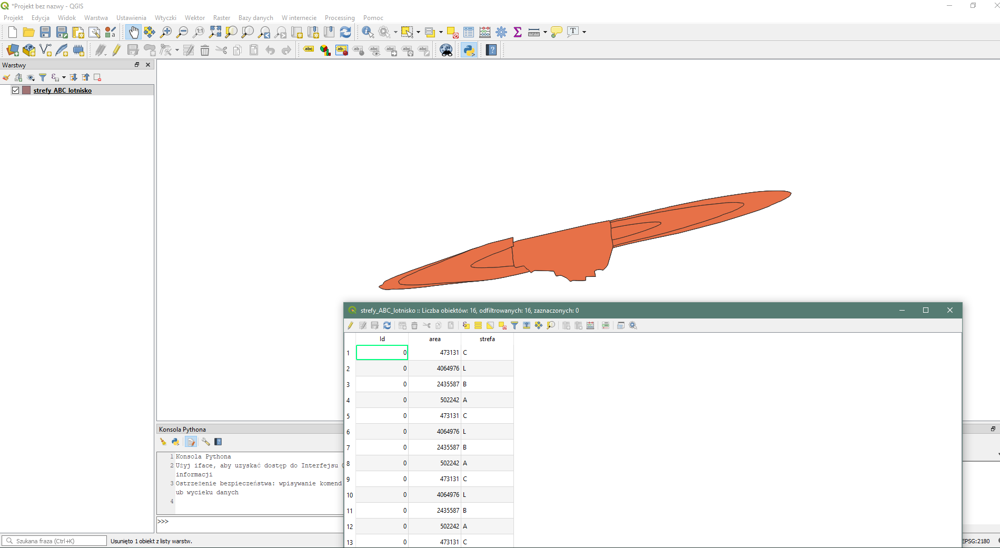Następnie otwieramy “Kalkulator pól”
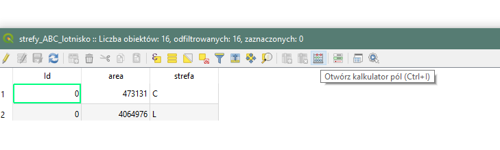W nowym oknie możemy ustalić kilka parametrów:
Dodanie nowego pola czy akutalizacja już istniejącego
Jeśli dodanie nowego pola -> typ danej i jej długość (liczba znaków) i w przypadku liczby zmiennoprzecinkowej liczba miejsc po przecinku
Poniżej znajdują się trzy okna. Idąc od lewej:
Pole wyrażenia -> tu wpisuje się funkcję, która zostanie wywowałana
Pole funkcji -> stąd można wyszukać funkcje które możemu użyć, w tym nazwy pól, operatory geometryczne itd.
Pole podpowiedzi -> krótki opis funkcji wybranej w polu funkcji.
Wpiszmy funkcję, która podzieli pole “area” przez 1000. Wynik zapisywany jest do nowego pola.
Poniżej widać, że w podpowiedziach “Pola i wartości” widzimy nazwy dostępnych pól
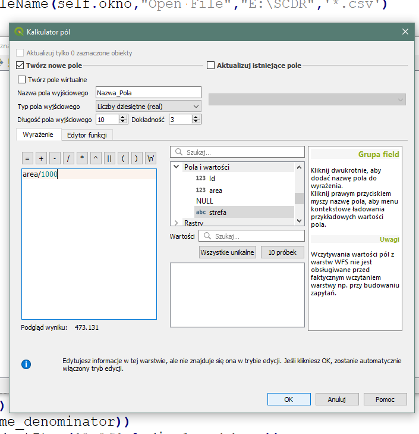Po wybraniu “OK” funkcja wykonuje się i dodaje nowe pole z obliczonymi wartościami do tabeli atrybutów warstwy.
Tryb edycji włącza się automatycznie, można go wyłączyć i zapisać stan.
GOTOWE!
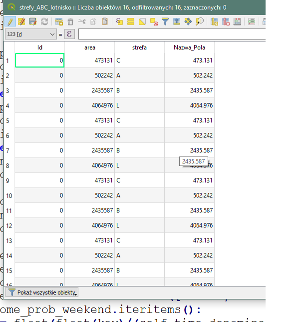Można również korzystać z operatorów geometrycznych, np.
pole -> $area
długość -> $length
Więcej operatorów znajdziemy w oknie funkcji
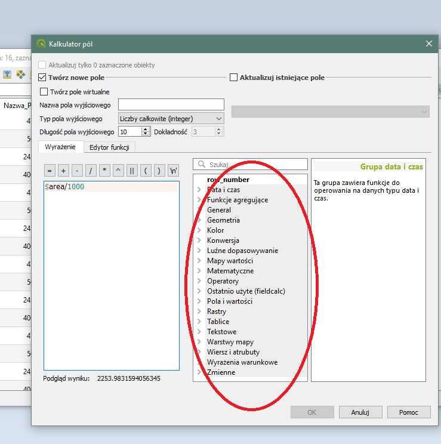Kalkulator pól w Pythonie#
Najpierw podczytamy sobie warstwę, załóżmy że mamy ją już w QGIS, więc odwołujemy się przez iface
warstwa = iface.activeLayer()
---------------------------------------------------------------------------
NameError Traceback (most recent call last)
Input In [1], in <cell line: 1>()
----> 1 warstwa = iface.activeLayer()
NameError: name 'iface' is not defined
Następnie dostajemy się do dataProvider żeby móc edytować warstwę, czyli w tym przypadku dodać nowe pole:
pr = warstwa.dataProvider()
Dodajemy nowe pole metodą klasy dataProvider - add.Attributes (zupłenie jak addFeatures - dodawanie obiektów do warstwy, ale tym razem dodajemy pole danych!)
Przyjmuje jako argument listę pól. A pole definiujemy jako klasę QgsField (już wspomniana na wykładzie), która składa się z (minimalnie) nazwy oraz typu zmienej. Typ zmiennej definiowany jest jako klasa QVariant. Double to liczba zmiennoprzecinkowa.
pr.addAttributes([QgsField("Nazwa",QVariant.Double)])
warstwa.updateFields() #pamiętamy o odświeżaniu!
Typy QVariant znajdziemy oczywiście w dokumentacji (dokumentacji Qt, nie QGIS API!):
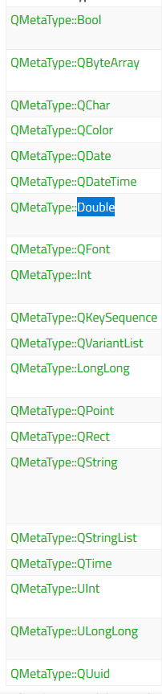Teraz dla każdego obiektu, możemy ustalić nową wartość utworzonego pola przy pomocy pozostałych pól:
for obiekt in warstwa.getFeatures(): #iterujemy się przez obiekty
obiekt.setAttribute(obiekt.fieldNameIndex('Nazwa'),obiekt['area']/1000)
warstwa.updateFeature(obiekt) #Każdy obiekt odświeżamy!
Dla obiektu w iteracji ustalamy wartość atrybutu metodą setAttribute. Metoda jako argument nr 1) przyjmuje współrzędne pola, którego wartość ma zmieniać, a jako drugi argument - wartość.
Wykorzystujemy metodę fieldNameIndex, które te współrzędne określa, należy podać tylko nazwę kolumny.
Podajemy wartość, która ma zostać wprowadzone w pole z argumentu nr 1. Tym razem jest to wartość kolumny “area” dzielona przez 1000.
Możemy zrobić to samo, korzystając z powierzchni będącej atrybutem obiektu warstwy:
for obiekt in warstwa.getFeatures(): #iterujemy się przez obiekty
obiekt.setAttribute(obiekt.fieldNameIndex('Nazwa'),obiekt.geometry().area()/1000)
warstwa.updateFeature(obiekt) #Każdy obiekt odświeżamy!
Czas na zadanie, którego nie da się wykonać nieprogramistycznie!
Na początku dodajemy do QGIS plik “siatka.shp”
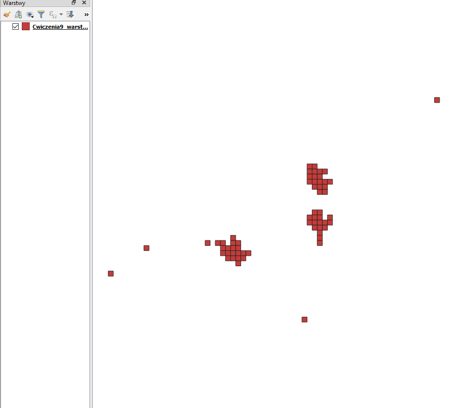Warstwa to siatka agregacji zliczeń wystąpienia radzkiego gatunku ptaka na obszarze Szkocji. Celem jest obliczenie prawdopodobieństwa występowania tych ptaków w danej lokacji.
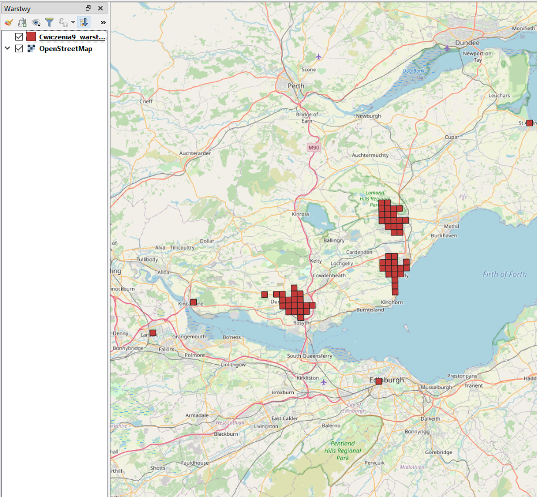Warstwa składa się z pól:
id - identyfikator
xmin,xmax,ymin,ymax - współrzędne narożników
NUMPOINTS - liczba wystąpień ptaków
Prawodpodobieństwo wystąpienia to stosunek częstości wystąpienia ptaka w danym miejscu w stosunku do całkowitej populacji ptaków (czyli sumy zliczeń).
Uwaga: suma prawdopodobieństw powinna się równać jedności.
Napiszmy skrypt, który w warstwie “siatka.shp” stworzy kolumnę o nazwie “P” typu Double, która będzie zawierała prawdopodobieństwo wystąpienia obecności obserwowanych gatunków ptaków.
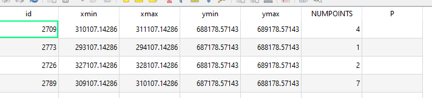Teraz należy obliczyć prawdopodobieństwo. Wynik przedstawiam po posortowaniu wartości po kolumnie “id”.
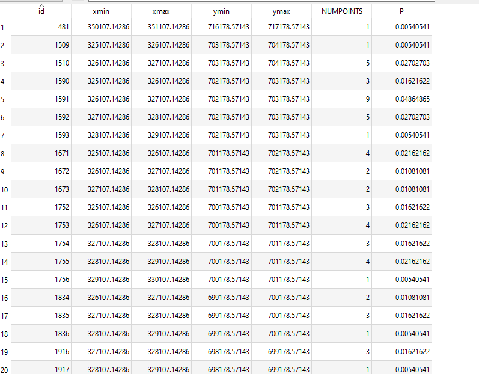Dodatkowo należy sprawdzić, czy wartości prawdodobieństwa równają się jedności. Wynik wyświetl do konsoli. Niestety ze względu na dokładność pola, wynik może wyjść nieznacznie różny od zera. Jest to akceptowalne.
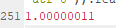Inny przykład - bez kalkulatora pól#
Tym razem nie będziemy już korzystać z kalkulatora. Wykonany kilka przykładów innych operacji na danych przestrzennych za pomocą Pythona, by zdobyć pewne wartościowe informacje.
Warstwa “Slady” zawiera dane zgromadzone przy pomocy rejestratora GPS - pozycje odczytywane co 10 sekund. W danych zarejestrowana jest jedna wycieczka - częściowo samochodem, częściowo pieszo. Warstwa zawiera kolumny:
INDEX - indeks danych
TIME - czas rejestracji
HEIGHT - wysokość punktu n.p.m.
Przykładowe zadanie
1. Oblicz całkowity czas trwania wycieczki w sekundach
2. Oblicz sumę przewyższeń zarejestrowanych w śladzie
3. Oblicz ile czasu zajęłoby pokonanie całej trasy, gdyby poruszać się ze średnią prędkością 18km/h (wynik podaj w godzinach, minutach i sekundach gg:mm:ss)
Zadanie 1
Do zadania 1 wykorzystamy pole “TIME”, które jest polem tekstowym. Możemy je transformować na typ danej czasu lub dokonać operacji bezpośredno na tekście zrzutowanym na liczbę. Druga wersja nie wymaga wykorzystania bibliotek (pierwsze rozwiązanie jest lepsze i szybsze, ale zrobimy nr 2).
Wybierzemy wartość najwyższą i najniżsżą a następnie obliczymy różnicę czasu.
Na początku wybierzmy wszystkie dane za pomocą wyrażenia listowego. Wybieram tylko czas bo data jest ta sama:
x = [feat['TIME'].split(' ')[1] for feat in warstwa.getFeatures()]
Następnie sortujemy dane:
x = sorted(x) #polecam funkcję sorted
Wybieramy pierwszy i ostatni zarejestrowany czas i rozbijamy go na godziny, minuty i sekundy (w tym momencie moglibyśmy też skorzystać z biblioteki datetime i wykorzystać typ zmiennej “czas” z innej bilbioteki Pythona).
first_x = x[0].split(':')
last_x = x[-1].split(':')
Zamieniamy dane z tekstowych na liczbowe. Można to zrobić wprost:
first_x = [int(x) for x in first_x]
last_x = [int(x) for x in last_x]
Lub bardzo przydatną funkcją wbudowaną Pythona (nie omawiałem jej wcześniej!) map()
first_x = map(int,first_x)
last_x = map(int, last_x) #zwracają iteratory nie listy
teraz musimy odjąć godziny, minuty i sekundy od siebie. Ja skorzystam z funkcji wbudowanej Pythona zip(). Sprawdźcie w dokumentacji jak działa:
wyniki = []
for x,y in zip(last_x,first_x):
wyniki.append(x-y)
#Wynik: [1, -1, 15]
Jeszcze przeliczamy na sekundy:
w_w_sekundach = 0
mnoznik = [3600,60,1]
for w,t in zip(wyniki,mnoznik):
w_w_sekundach += w*t
print(w_w_sekundach)
#Wynik: 3555